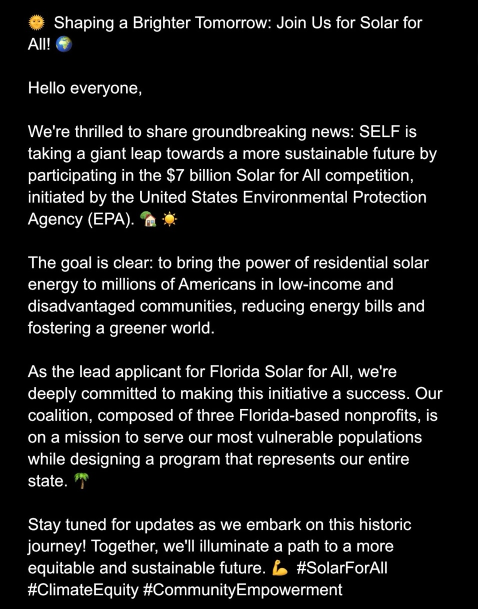
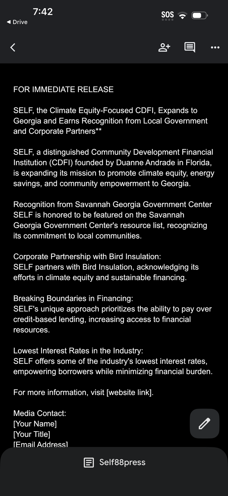
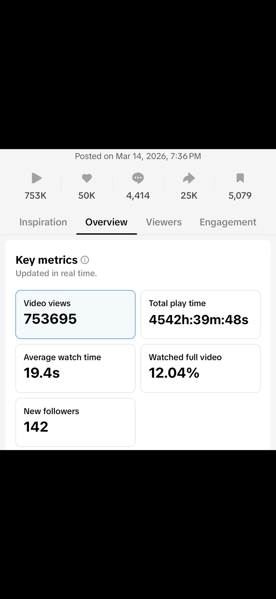

March Viral Moments
TikTok is my strongest channel. These three organic posts from March demonstrate my ability to create content that the algorithm amplifies naturally—zero paid budget, pure strategic content architecture.


Campaign Work
A selection of branded content and creative campaigns spanning energy, solar, and press topics.




Analytics
Real numbers. 753K views achieved through organic strategy—no paid amplification.

Ad Video
Mock ad concept demonstrating scripting, filming, and editing skills.